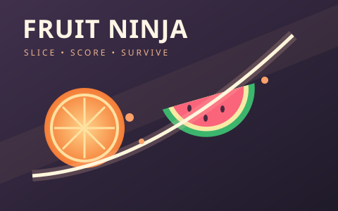

HOLD & DRAG TO SLICE · AVOID THE BOMBS

ORBIT GAMES
Slice the flying fruit. Keep your blade away from bombs.
Hold left click and draw a line through fruit, or swipe on touch.Start with 3 lives. Each missed fruit costs a life.Slice a bomb and the run ends instantly.Fruit: 10 points · Multi-fruit slices earn combo bonuses.
Fruit comes faster and in bigger waves as you survive.Your best score joins the shared cartridge leaderboard.